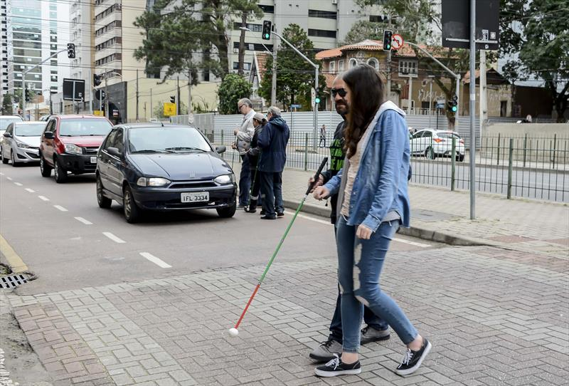

"Deficientes visuais reclamam das dificuldades em atravessar ruas"
As dificuldades em atravessar as ruas para quem é deficiente visual, são muitas. Em Presidente Prudente, existem 80 semáforos distribuídos em 21 pontos da cidade, conforme a Secretaria de Assuntos Viários (Semav), com a finalidade de auxiliar os cegos e evitar acidentes. Porém, quem precisa da ajuda dos sinais sonoros diz que as dificuldades são constantes.

Segundo a Associação Filantrópica de Proteção aos Cegos, boa parte dos semáforos não funcionam ou não estão de acordo com as necessidades dos deficientes. A coordenadora Eliete Margutti diz que a instalação não segue um critério específico e aponta a necessidade de acrescentar mais dispositivos.
Outra parte da população que não necessita usar os sinais sonoros, também reclama das dificuldades em atravessar as avenidas movimentadas. "Temos que ter atenção, porque quando fecha um lado da via, o outro já abre e todos os carros começam a passar. Ou seja, temos que parar no meio da rua ou nas 'ilhas' e esperar o fluxo de veículos diminuir", relata Dirceu Junqueira.
Clique aqui para ver comentários do Blog